সম্পূর্ণ সিলেবাস কভারেজ
Playgroup–Class 1: বাংলা, ইংরেজি, গণিত — ৬টি কাস্টম-বিল্ট এডুকেশনাল গেম, ভয়েসওভার-সহ ছড়া ও কনটেন্ট।
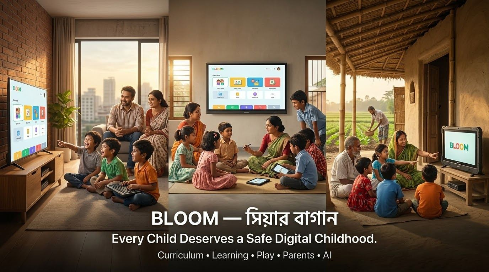
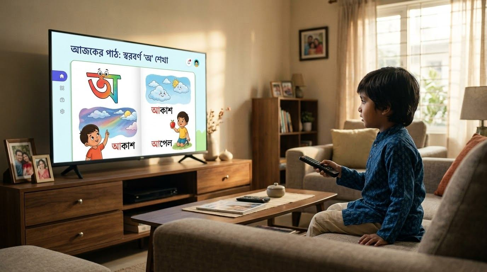
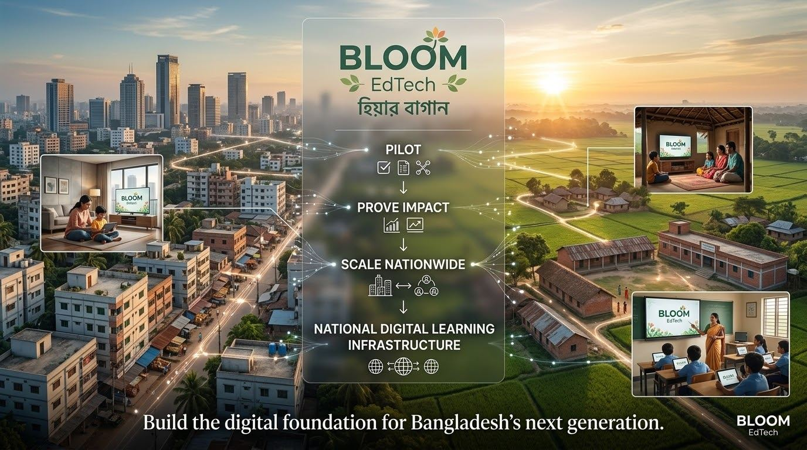
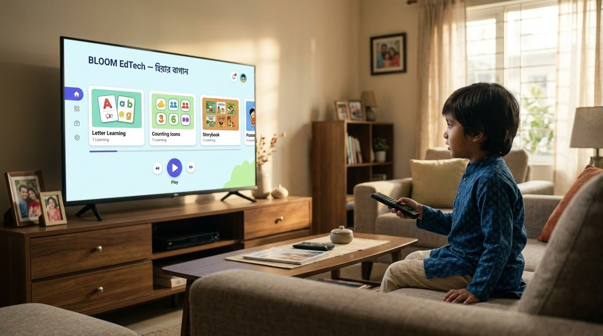
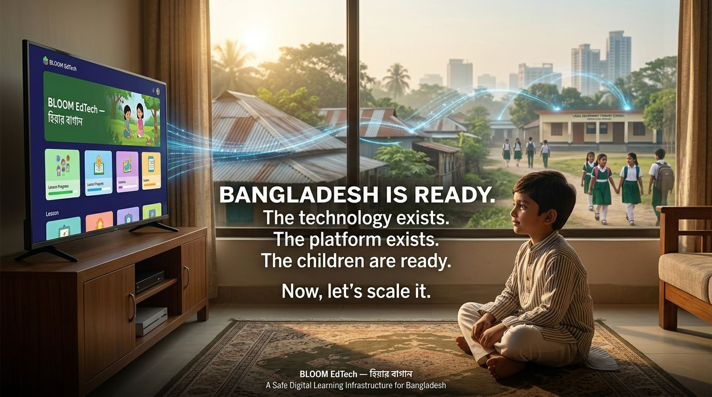
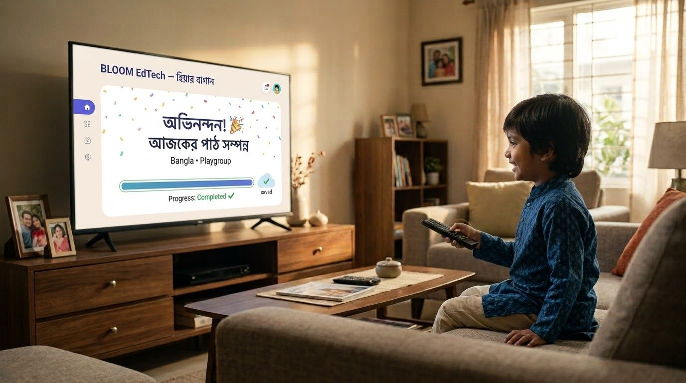
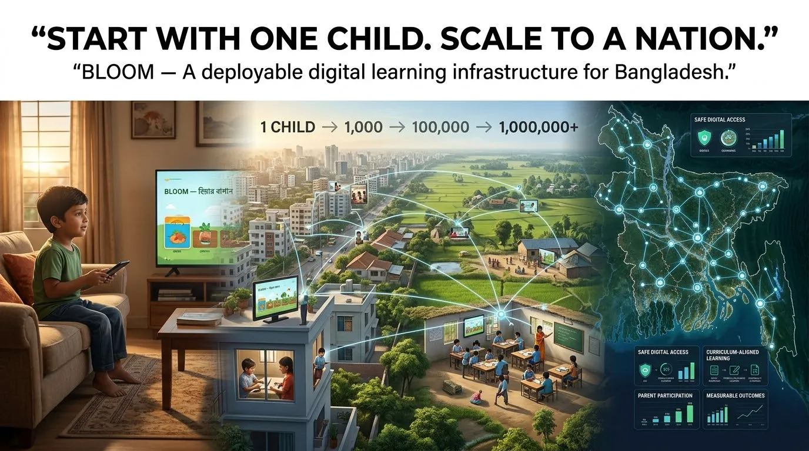
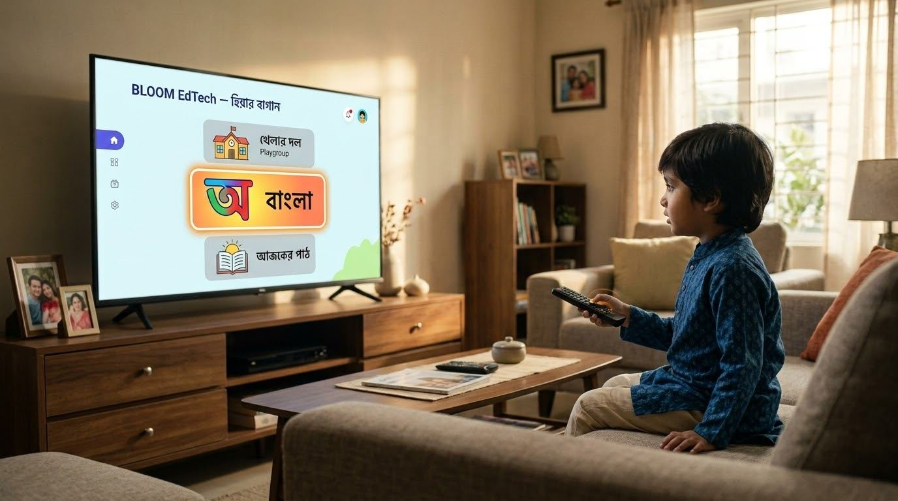
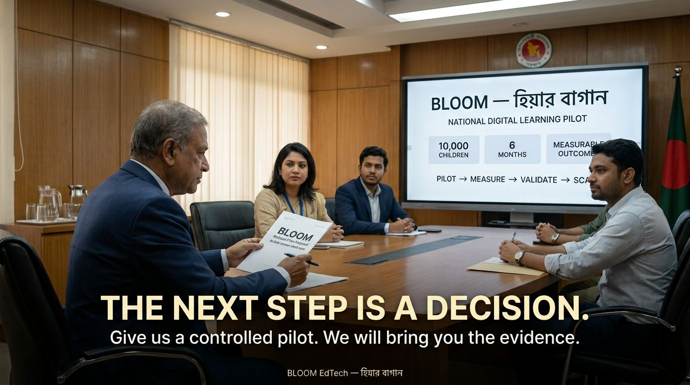
জাতীয় ডিজিটাল লার্নিং ইনফ্রাস্ট্রাকচার প্রস্তাবনা
প্রতিটি শিশুর প্রাপ্য একটি নিরাপদ ডিজিটাল শৈশব।
Curriculum · Learning · Play · Parents · AI — মাননীয় শিক্ষামন্ত্রী জনাব ববি হাজ্জাজ-এর বিবেচনার জন্য নিবেদিত
লাইভ অ্যাপ দেখুন — hiya.handsandhead.com ↗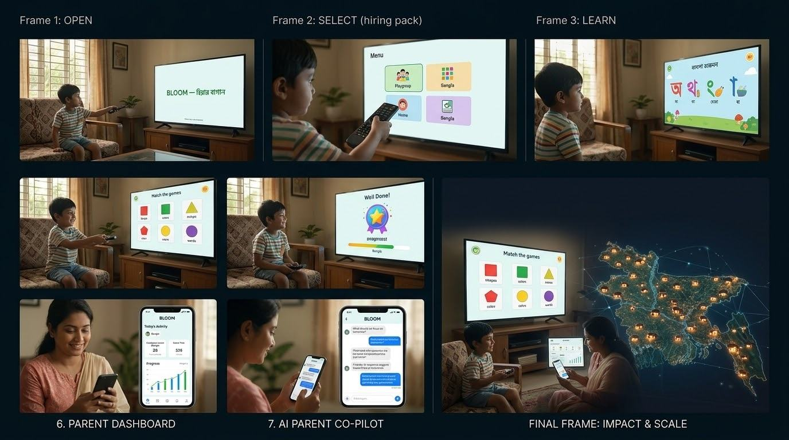
সমস্যা
আসন্ন AGI/ASI যুগে সম্পূর্ণ স্ক্রিন-বঞ্চনা কোনো বাস্তব সমাধান নয়। প্রকৃত সমস্যাটা স্ক্রিন নয় — এটা একটা নিয়ন্ত্রণ ও সার্বভৌমত্বের সমস্যা।
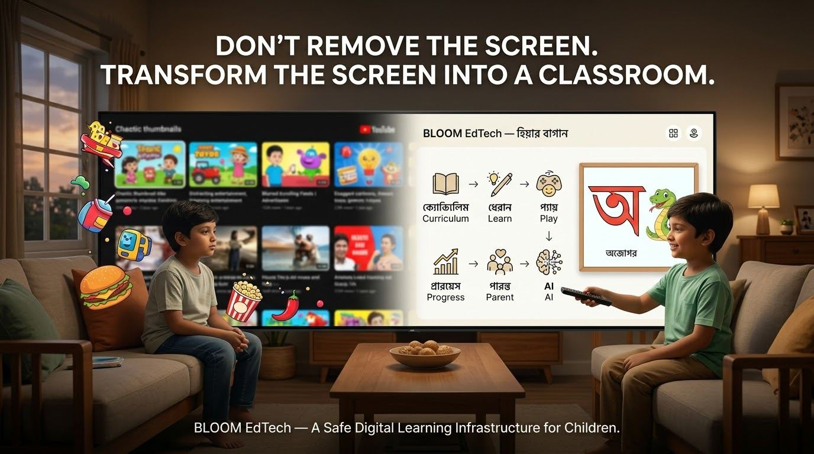
স্ক্রিন সরাবেন না। স্ক্রিনকে ক্লাসরুমে রূপান্তর করুন।
সমাধান
Playgroup থেকে Class 1 পর্যন্ত সম্পূর্ণ সিলেবাস — বাংলা, ইংরেজি, গণিত — মোবাইল ও স্মার্ট টিভিতে, শূন্য অ্যালগরিদম, শূন্য random recommendation।
Playgroup–Class 1: বাংলা, ইংরেজি, গণিত — ৬টি কাস্টম-বিল্ট এডুকেশনাল গেম, ভয়েসওভার-সহ ছড়া ও কনটেন্ট।
কঠোরভাবে বাছাইকৃত ইউটিউব কনটেন্ট — কোনো র্যান্ডম রিকমেন্ডেশন বা অ্যালগরিদমিক এক্সপোজার নেই।
রিয়েল-টাইম ট্র্যাকিং — সন্তান আজ কী শিখল, কতক্ষণ শিখল, কোথায় সাহায্য দরকার।
একটি কাস্টম AI অ্যাসিস্ট্যান্ট বট, যা অভিভাবককে সন্তানের শেখার অগ্রগতি বুঝতে ও গাইড করতে সাহায্য করে।
সম্পূর্ণ তত্ত্বাবধান — কী দেখা যাচ্ছে, কতক্ষণ, এবং কখন তা অভিভাবকের নিয়ন্ত্রণে।
বড় স্ক্রিনের জন্য পূর্ণাঙ্গ রিমোট-নেভিগেশন সাপোর্ট, আনলিমিটেড ডেটা স্টোরেজ ক্যাপাসিটি।
এটা একটা কনসেপ্ট নয়
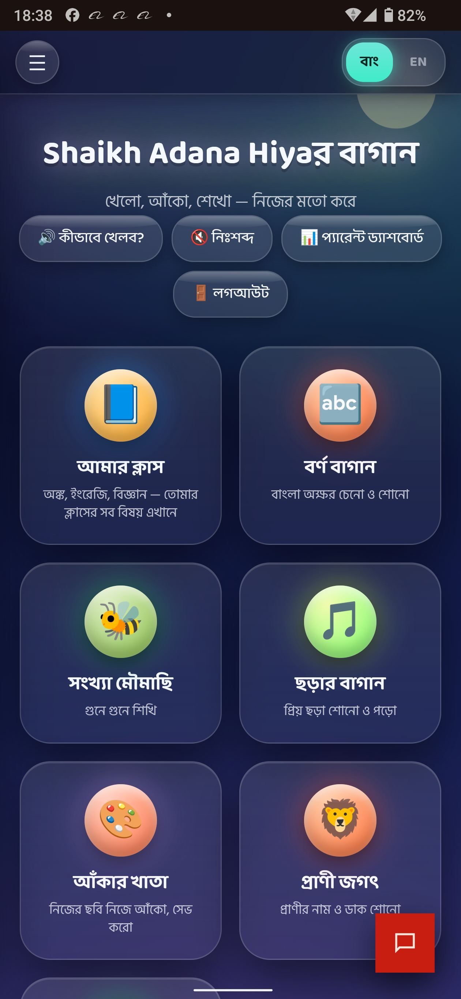
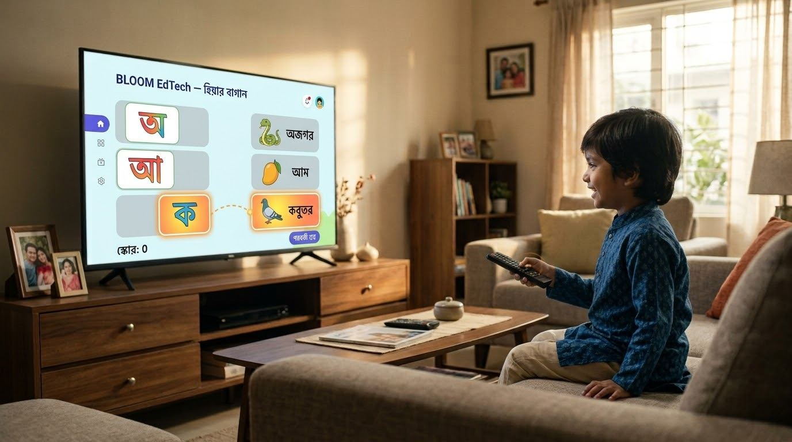
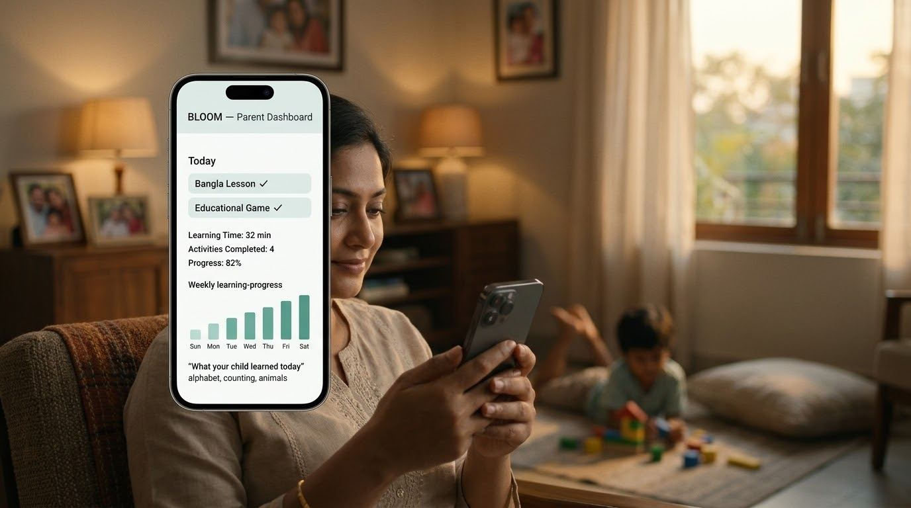
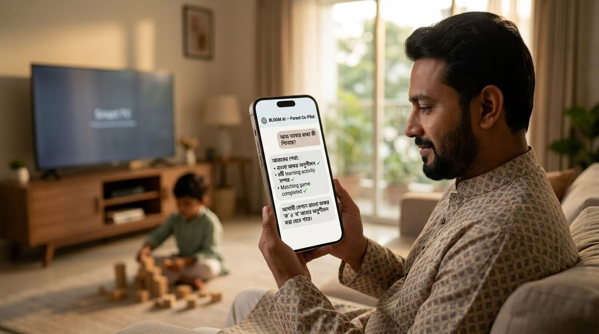
কীভাবে এটি একটি জেলা থেকে একটি জাতিতে পরিণত হয়
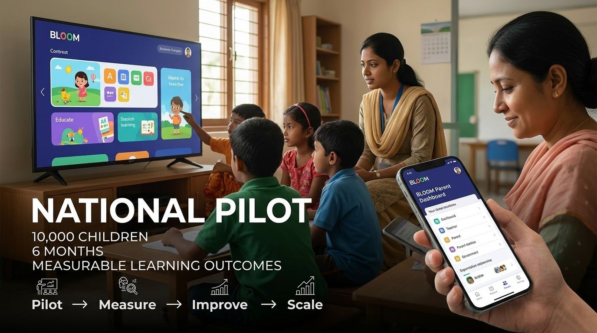
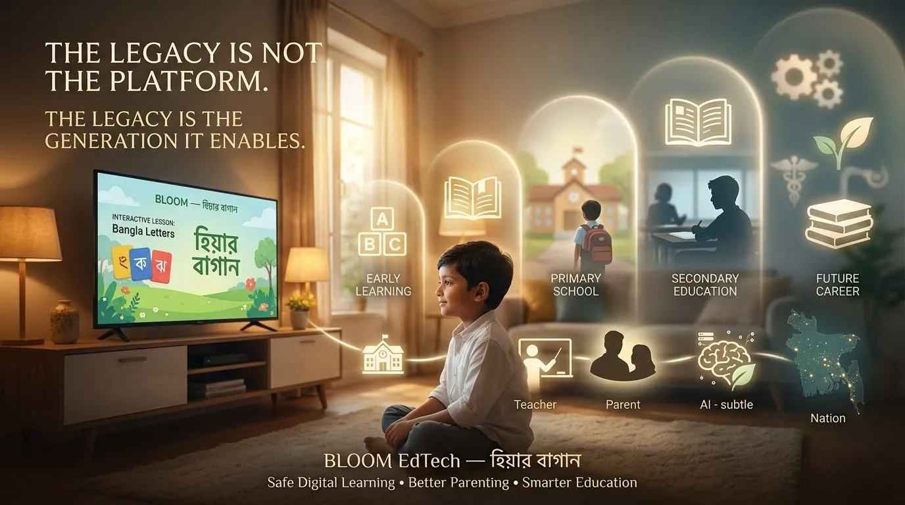
মন্ত্রণালয় কী দেখবে
প্রতিটি শিশুর নাম নয় — অ্যাগ্রিগেটেড, প্রাইভেসি-সচেতন জাতীয় শিক্ষা ইন্টেলিজেন্স, নীতিনির্ধারণের জন্য প্রস্তুত।
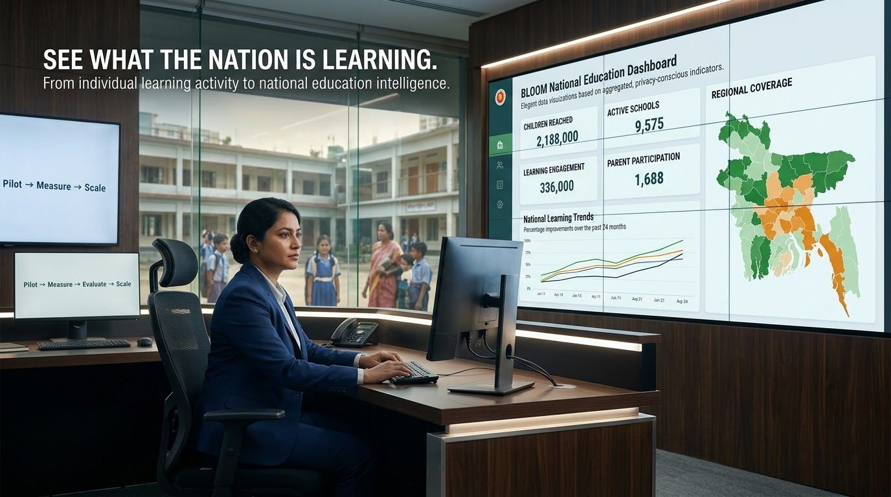
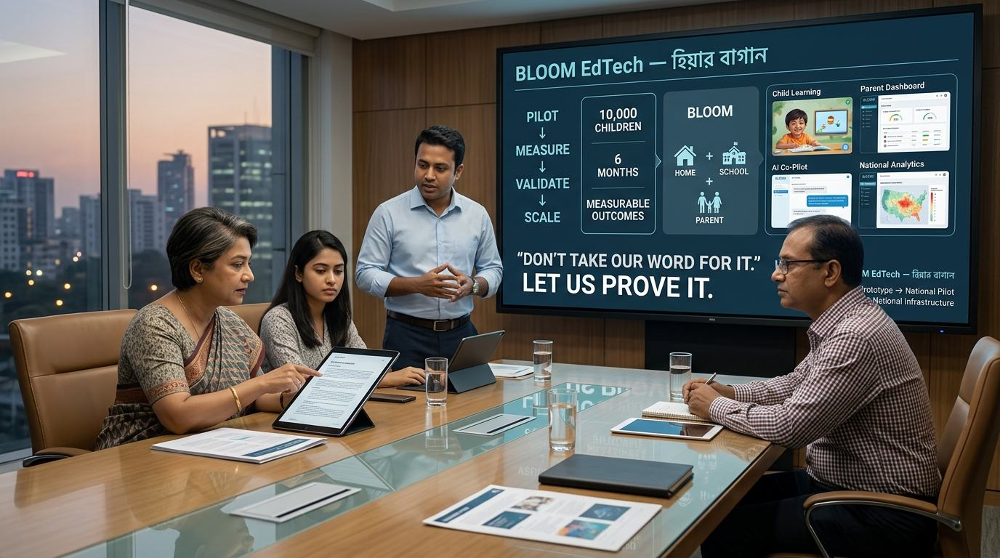
Public-Private Partnership মডেল
পরবর্তী পদক্ষেপ
আমাদের একটি নিয়ন্ত্রিত জাতীয় পাইলট দিন। আমরা প্রমাণ নিয়ে আসব।
উত্তরাধিকার প্ল্যাটফর্ম নয় — উত্তরাধিকার সেই প্রজন্ম, যাকে এটি সক্ষম করে।